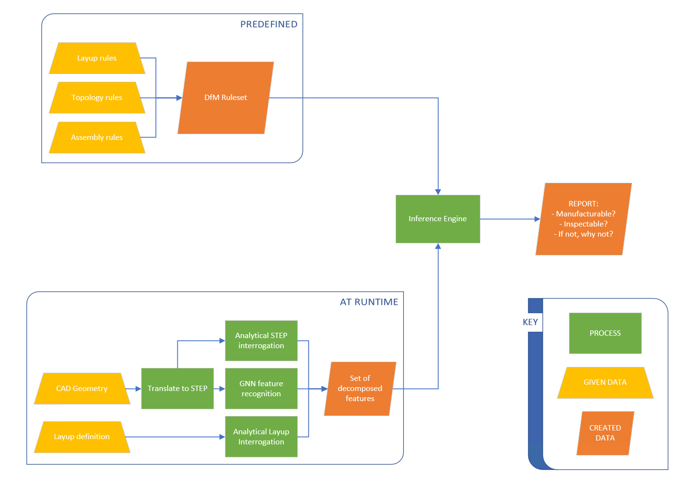

1. Introduction¶
SmartDFM application aims to deliver immediate design feedback to a CAD engineer. The application can be integrated in CAD system (currently demonstrated in CATIA). Upon initiating it compares a rules database with information available about the part design: shape, size, materials, layup… Based on the rules flagged a report is generated to support the engineer in making further improvements to the design.
The diagram below outlines the main components of the application:
The boxes titled “PREDEFINED” correspond to the rule database. These are design rules collected from design guideline documents and from experts directly. These rules are relted to laminate design, general modelling, assembly, material considerations, metrology, etc… For the demonstrator limited selection of design rules was taken from NCC’s rule database. NCC’s rule database is an intelectual property of NCC and hence is not shared in full. For more information find appropriate contact in Contact section.
The “AT RUNTIME” boxes interogate currently available files to obtain any information relevant for evaluation of the rules. Currently two files are typically evaluated: .step file describing the part itself, and “layup file” - standardised description of layup refering to CAD geometries for precision. There are many individual scripts that support this, the green boxes only highlight the most notable aspects; these have dedicated sections elsewhere in the documentation.
Inference engine is essentially a structure of funcitons and classes designed for easy comparion of facts and rules. Facts being the information collected about part, and rules being standardised Python implementation of selected rules from rule database.
2. Why SmartDFM?¶
There are commercial software that aspire towards similar goals. However, this should not be seen as a standalone software, but rather as a demonstrator template. Every company will have slightly different rules of design, every company will work with different manufactuirng processes, etc, etc… This tool is highly modular and allows for relatively easy implementation of bespoke rules.
The pre-rules, i.e. collection of information from CAD, tends to be more difficult. Author’s (far-fetched) hope is that with many people building their own tools to obtain attributes of interest from their CAD, we could eventually build a strong library of plug-and play modules that everyone could use for their implementation of SmartDFM.
Initially, the demonstrator version is done with CATIA environemnt in use. However, this can also be easily switched for any other scriptable CAD package. Some script will need adjusting, but due to the modularity of FactBase, RuleBase and Prebase the developments required should be minimal.